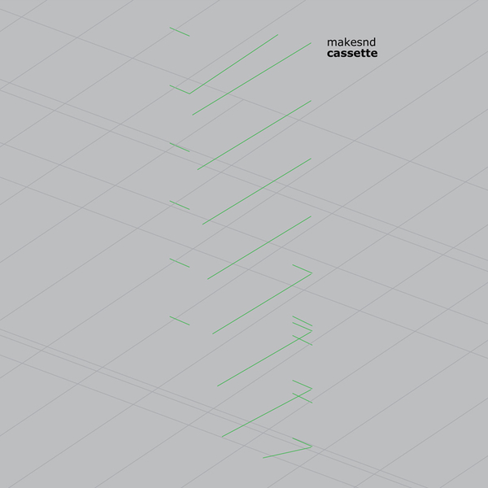

Mille Plateaux, 1999
There’s minimal, and then there’s snd.
Makesnd Cassette was the duo’s first full-length statement, and explored their unhappiness with the way music was (and still is) structured. Instead of working around specific time-based changes, Steel and Fell would instead come up with a loop and allow it to play out, making only a few tweaks.
This meant no developing melodic flourishes to speak of, and certainly no lofty compositional twists and turns. Instead their method highlighted minute rhythmic tics and put all the focus on what would usually be incredibly subtle elements.